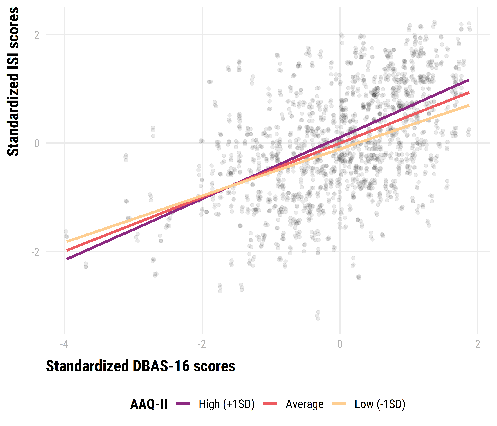

Lower levels of psychological flexibility may enhance the effects of dysfunctional beliefs on insomnia symptoms.
The association between sleep-related cognitions, psychological flexibility, and insomnia symptoms
Marwin M. I. B. Carmo 1, 
@marwincarmo
marwin@usp.br
Renatha El Rafihi Ferreira 1
rerafihi@usp.br
1 Department of Psychiatry, University of São Paulo
Introduction
The cognitive-behavioral model of insomnia proposes that arousal, cognitions, behaviors, and perceived consequences play an important role in maintaining insomnia symptoms. The metacognitive model of insomnia expands this idea by defining cognitive activity as primary arousal and how one interprets those thoughts as a secondary arousal. Because primary and secondary processes mutually influence each other, the content of maladaptive sleep-related thoughts can impact the maintenance of insomnia disorder more strongly if one is rigidly attached to them
Objective
To investigate if psychological inflexibility moderates the relationship between dysfunctional beliefs about sleep and insomnia severity.
Methods
Data were collected from online surveys responded by 642 adults, aged 18 to 59 years, who reported experiencing insomnia symptoms.
Participants completed self-report questionnaires, including:
- Hospital Anxiety and Depression Scale (HADS);
- Insomnia Severity Scale (ISI);
- Dysfunctional Beliefs and Attitudes about Sleep Scale (DBAS-16);
- Acceptance and Action Questionnaire (AAQ-II).
A linear model (estimated using OLS) was fitted to predict ISI scores from DBAS-16 and AAQ-II with age, sex and HADS subscales as covariates:
\[ IGI \sim Age + Sex + HADSA + HADSD + DBAS\times AAQII \]
Results
Mean age was 38.4 \(\pm\) 10.1 years. Female participants accounted for 78.2% of the sample. Median family income was 6000.00. The sample was composed of 70.1% whites, 24.6% blacks, 5% Asians and 0.3% Indigenous. The participants origin were largely from the Southeast Region (78.5%). Participants with a a Bachelor’s or higher degree were 73.4% of the sample. 59.6% of participants take sleep medications at least once a week and 35.8% take it every night.
 from the legend himself, [Yihui Xie](https://twitter.com/xieyihui).](cb_sono_poster_files/figure-html/irisfigure-1.png)
Figure 1: Here is a caption for the figure. This can be added by using the “fig.cap” option in the r code chunk options, see this link from the legend himself, Yihui Xie.
Maybe you want to show off some of that fancy code you spent so much time on to make that figure, well you can do that too! Just use the echo=TRUE option in the r code chunk options, Figure 2!
#trim whitespace
par(mar=c(2,2,0,0))
#plot boxplots
boxplot(iris$Sepal.Width~iris$Species,
col = "#008080",
border = "#0b4545",
ylab = "Sepal Width (cm)",
xlab = "Species")

Figure 2: Boxplots, so hot right now!
How about a neat table of data? See, Table 1:
|
Sepal Length |
Sepal Width |
Petal Length |
Petal Width |
Species |
|---|---|---|---|---|
| 5.1 | 3.5 | 1.4 | 0.2 | setosa |
| 4.9 | 3.0 | 1.4 | 0.2 | setosa |
| 4.7 | 3.2 | 1.3 | 0.2 | setosa |
| 4.6 | 3.1 | 1.5 | 0.2 | setosa |
| 5.0 | 3.6 | 1.4 | 0.2 | setosa |
| 5.4 | 3.9 | 1.7 | 0.4 | setosa |
| 4.6 | 3.4 | 1.4 | 0.3 | setosa |
| 5.0 | 3.4 | 1.5 | 0.2 | setosa |
| 4.4 | 2.9 | 1.4 | 0.2 | setosa |
| 4.9 | 3.1 | 1.5 | 0.1 | setosa |
| 5.4 | 3.7 | 1.5 | 0.2 | setosa |
| 4.8 | 3.4 | 1.6 | 0.2 | setosa |
| 4.8 | 3.0 | 1.4 | 0.1 | setosa |
| 4.3 | 3.0 | 1.1 | 0.1 | setosa |
| 5.8 | 4.0 | 1.2 | 0.2 | setosa |
References